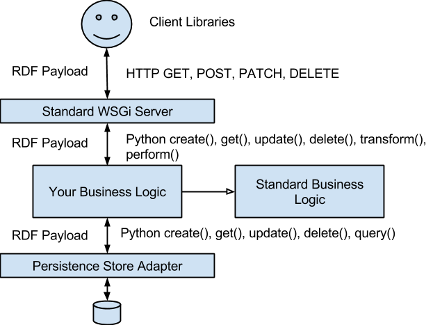

LDA Server Libraries
The following diagram attempts to explain the overall structure of the framework

Standard WSGi Server
The ‘Standard WSGi Server’ code of the framework has the following functions:
- Accept requests from users. Any request body is expected to be in any one of many RDF formats, including RDF/JSON and ‘simple JSON’. (If you use our client library, it will almost always use the RDF/JSON format)
- Translate the request body to a set of Python objects – dictionaries, arrays and literal values. The organization of these Python objects matches the organization of the RDF/JSON serialization format, regardless of the original serialization format.
- Call the appropriate Business Logic Layer function – create(), get(), update(), delete(), transform() and action(). Create, get, update and delete should be self-explanatory. transform is a form of POST that does not create a new thing, and is ‘safe’ (no side-effects) in the technical sense of ‘safe’ as described in the HTTP spec. Transform takes a resource representation on input and produces another on output. Query processors are an example of transforms. A fahrenheit to centigrade converter would be another. We currently model login as a transform. Action is a POST with side-effects. Logout is modelled as an action.
- Return a result. The business logic layer will return a status code, a set of RDF/JSON-structured python objects and potentially headers. The standard server will convert those python objects into the representation that was requested by the client. This includes HTML – the only HTML that ever comes out the server is RDFa HTML calculated mechanically by the standard server from RDF/JSON-structured python objects. [Errors are not in RDF format – they are an array of pairs].
The standard WSGi server is not big or complex – it stands at around 450 lines of Python at the moment, although a commercial-quality one with good error checking, good logging and so on would probably be a few times bigger.
Standard Business Logic
The job of the business logic layer is to implement the CRUD+transform+action methods of the application. It can do this however it likes – by calculation, by accessing other REST resources, by accessing SOA services, or by accessing persistent storage systems. The pattern where a resource on the web is backed by some persistence entity in a storage system is so pervasive – even amongst applications that do other things in addition – that we provide a default implementation that does this that your business logic can subclass. this implementation is in the Standard Business Logic Layer. Its responsibilities are the following:
- Taking a CREATE (POST) request from the WSGi server and turning it into a corresponding insert into the storage tier. The representation of the to-be-created resource is RDF
- Taking a GET request from the WSGi server and translating it into a retrieve of a single entity on the storage system. The representation of the retrieved storage entity is RDF
- Taking a DELETE request from the WSGi server and translating it into a delete of a single entity on the storage system.
- Taking a PATCH request from the WSGi server and translating it into an update of an entity on the storage system. The representation of the to-be-created resource is RDF
- Taking a transform (POST) request from the WSGi server and translating it into query on the storage system. The representation of the query resource is structured like RDF/JSON with some tweaks (see the section on query) and the result is pure RDF.
- Providing a default implementation of ‘virtual’ container resources that are calculated from queries. This includes the ability to POST to these resources as well as to GET them. It also includes augmenting the representation of other resources to point to these virtual resources. (Note to self – should this not be in a library that can be used without having to subclass?)
- Augmenting each resource with a reference to a ‘virtual’ container that lists the historic versions of the resource.
The Standard Business Logic Server is also not big – it is under 650 lines – although would be a couple of times bigger if it were refined to commercial quality.
Persistence Store Adapter
Each Persistence Store Adapter has the same CRUD+Query interface, and all inputs and outputs are RDF/JSON-organized python objects. To date we only have a MongoDB adapter. The responsibilities of the Persistence store adapter are:
- Implement CRUD+query methods
- On create, take RDF/JSON-structured python objects on input and store them in some form in the database. Make sure that URLs that point anywhere within the current system – even if it is in a different sub-system from the one doing the create – are stored in a form that will allow the domain name of the system proxy server to change without invalidating any data in the database. Changing the proxy server domain name can happen for operational reasons or because the system was cloned.
- On retrieve of a single entity, access the data store and return the resource in RDF/JSON-organized python objects. Make sure all URLs that point to other resources in the same system – even if they are on a different subsystem – use the current domain name of the system, not the one that was current when the resource was stored or updated.
- On update of a resource, modify those parts of the stored resource that are referenced by the PATCH input, which is in the form of RDF/JSON-organized python objects. The resource to be updated is specified by its URL. Make sure any triples in the resource that are not referenced by the PATCH are preserved unmodified. We do not support PUT for update (i.e. there is no update that will blow away al data not referenced in the update). See a later section for more detail on the PATCH format.
- Execute queries on the data. The query is in the form of RDF/JSON-organized Python objects with a few extensions. See a later section for details.
- Delete entities from the database. The entity to be deleted is identified by its URL.
This currently comprises about 500 lines of Python, although a commercial- quality version would probably be a couple of times that.